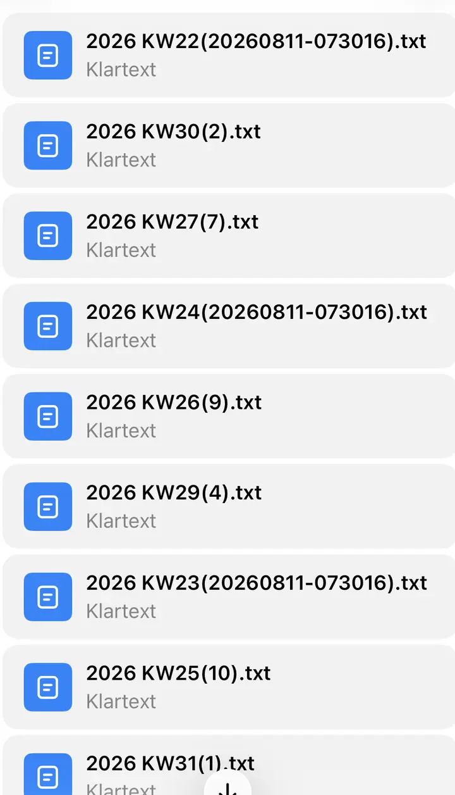
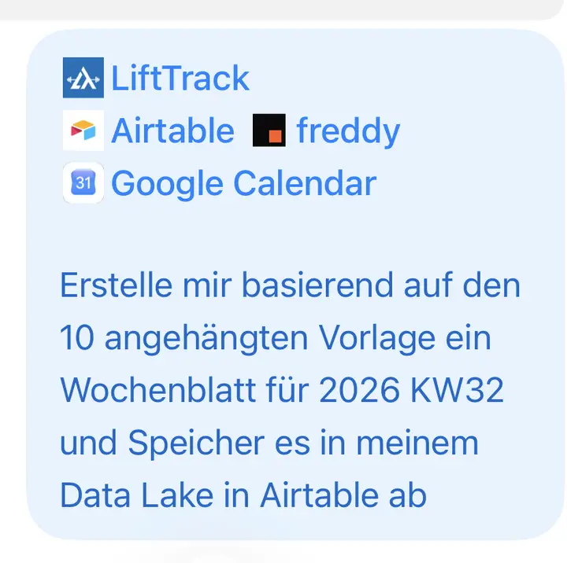

WHAT I DO
- Wear my devices
- Train normally
- Use the apps I already use
- Capture things machines cannot know
- Ask ChatGPT normal questions
REAL-WORLD PERSONAL AI ARCHITECTURE EXPERIMENT
Your data. One context. Better decisions.
I’m building and testing an independent Personal AI Systems Architect: a way to turn the devices, apps, accounts, and data you already have into the smallest setup that actually helps with the life you want to live.
This is not another dashboard or super-app. The idea is to keep specialist tools that already work, connect enough of their context, and use AI where cross-domain reasoning is actually useful.

Recovery, training, nutrition, calendar, and subjective logs.
Your tools. Your accounts. Your data. Tested architecture.
PUBLIC DISCOVERY PILOT · 60 SECONDS
Choose what you already use and one decision you actually face. You will see how a Personal AI OS could turn existing signals and real-life context into a useful next step.
3 taps · no login · no connection required
HOW IT WORKS
The point is not to spend more time managing data. It is to keep using normal tools, capture the few things machines cannot know, and make the combined context available when a real question comes up.

WHAT I DO
WHAT HAPPENS IN THE BACKGROUND
Data and context become available through a mix of sync, read-only access, deliberate write access, intermediary services, and a low-friction Raw Log that is reconciled into structured long-term memory once per day.
Capture now. Enrich later. Structure once. Not every connection is automatic, and that is part of the actual design problem.
THEN
ChatGPT can reason across the combined context and help with real decisions instead of responding to one isolated metric or one app in a silo.
REAL USE CASES
Practical examples of what becomes possible once multiple sources can be queried as one context instead of one screen at a time.
CASE STUDY 1 · FEATURED · ONE REQUEST, FOUR CONNECTED SYSTEMS
On an iPhone, I attached ten previous weekly reports and called LiftTrack, freddy, Google Calendar, and Airtable in the same prompt. ChatGPT combined training, recovery, schedule, manual journal context, and the structure of the earlier reports into one new weekly review for KW32 — then saved it to the Alex Data Lake in Airtable.
CONTEXT
ONE NATURAL-LANGUAGE REQUEST
„Erstelle mir basierend auf den 10 angehängten Vorlagen ein Wochenblatt für 2026 KW32 und speichere es in meinem Data Lake in Airtable ab.“
USABLE OUTPUT
KW32 weekly reportOne request. Four systems. One useful result — stored where the next week can build on it.


The evidence is deliberately cropped. The workflow is public; the detailed personal health content is not.
CASE STUDY 3
Instead of a generic answer, the Personal AI Coach combines Garmin and freddy recovery signals, recent LiftTrack strength-training history, Airtable subjective notes, and Google Calendar constraints — then answers one question: should I run today, and if yes, what kind of run actually fits?
Key point: not another readiness score — a contextual decision across all your data.


CASE STUDY 4 · REST IS A TRAINING DECISION
Recent training load, recovery context, the current week, everyday movement, upcoming sessions, and longer-term goals can all point to the same answer: no structured training today.
Key point: a useful system should sometimes recommend doing less, not maximize engagement or exercise minutes.
CASE STUDY 5
An iPhone Shortcut on the lock screen opens a persistent ChatGPT Raw Log. I capture what happened immediately without stopping to structure it; later, a daily quality-control pass reconciles the raw sequence into the structured Airtable Journal.
Key point: manual logging only survives if friction is extremely low.
CASE STUDY 6
A meal can be captured as text, voice, or image without interrupting the moment. The image and timestamp remain in the Raw Log; unresolved details can be clarified later, and estimates stay explicitly marked as estimates before the daily QC consolidates one final journal event.
Key point: reconstructable context with less interruption of real life — not perfect automatic calorie tracking.
CASE STUDY 7
The same recovery data can lead to different recommendations depending on what is actually planned for the day. Calendar context becomes part of decision support instead of remaining a separate productivity silo.
CASE STUDY 8
The system can inspect LiftTrack workout context together with recovery and real-life constraints, then suggest concrete session changes.
Current missing link: the LiftTrack integration exposed to ChatGPT is read-only, so suggested changes may still need to be applied manually.
UNDER THE HOOD
Specialist tools stay specialist tools. A separate access, memory, and reasoning layer connects only the context needed for the decision.
DEVICES & SPECIALIST APPS
ACCESS & DURABLE MEMORY
REASONING & DELIBERATE ACTIONS
CAPTURE & APPS
CONTEXT & MEMORY LAYER
REASONING LAYER
SPECIAL WORKOUT FLOW
IMPORTANT FLOWS
Editing behavior, sync direction, and reliability can vary. This should not be mistaken for one flawless universal data model.
| Component | Role | How it is used here | Current reality |
|---|---|---|---|
| ChatGPT | Reasoning layer | Combines retrieved context with normal user questions | Useful for synthesis, but outputs still need judgment and verification |
| Airtable | Structured memory | Reads and writes curated long-term context | Raw events are reconciled in a daily QC pass rather than written message-by-message |
| LiftTrack | Training context | Provides workout templates, exercise details, and history where available | The LiftTrack integration exposed to ChatGPT is currently read-only |
| Garmin Connect + Garmin / Fenix 8 | Execution and signals | Captures workouts, recovery signals, and watch-based confirmations | Core source of real data, but sync chains and edits can break or behave differently |
| freddy | Aggregation/access layer | Exposes combined health, recovery, and training metrics from connected services | Useful abstraction layer, but only as complete as its upstream sources |
| Apple Health | Intermediary health layer | Acts as a shared route for compatible sources | Important connective tissue, not the single source of truth for everything |
| DrinkLog | Manual event logging | Adds alcohol-related context when needed | Only valuable if it actually gets logged and propagated |
| Google Calendar | Life context | Reads schedule constraints and supports deliberate user-requested changes | Changes recommendations without changing the underlying biometrics |
| iPhone Shortcuts | Low-friction input | Opens the persistent Raw Log from the lock screen | Capture stays intentionally simple; structure is added during later reconciliation |


WHY THIS MATTERS
Their information already exists, but it is scattered across wearables, training apps, health platforms, calendars, notes, food logs, and their own head.
The Personal AI OS thesis is to start with the person — goals, existing tools, data, privacy preferences, budget, technical confidence, and tolerance for friction — and derive the smallest useful architecture instead of asking them to migrate everything into one new product.
The value isn’t another place to look at your data. It’s being able to ask a better question — with enough context to answer it well.
CURRENT STATUS
That is not a weakness to hide. It is the whole point of documenting a real personal AI workflow instead of pretending the ecosystem is already finished, standardized, or clean.
SAFETY / PRIVACY / DISCLAIMER